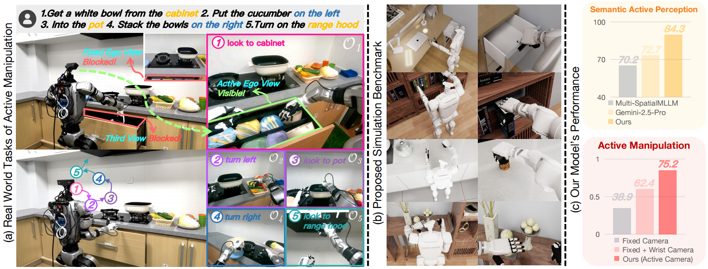
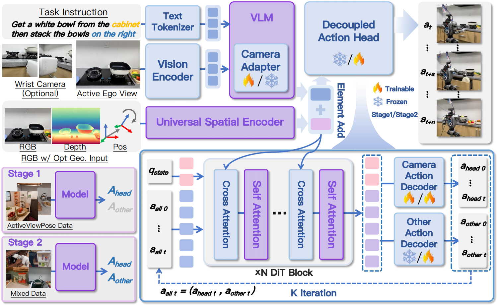
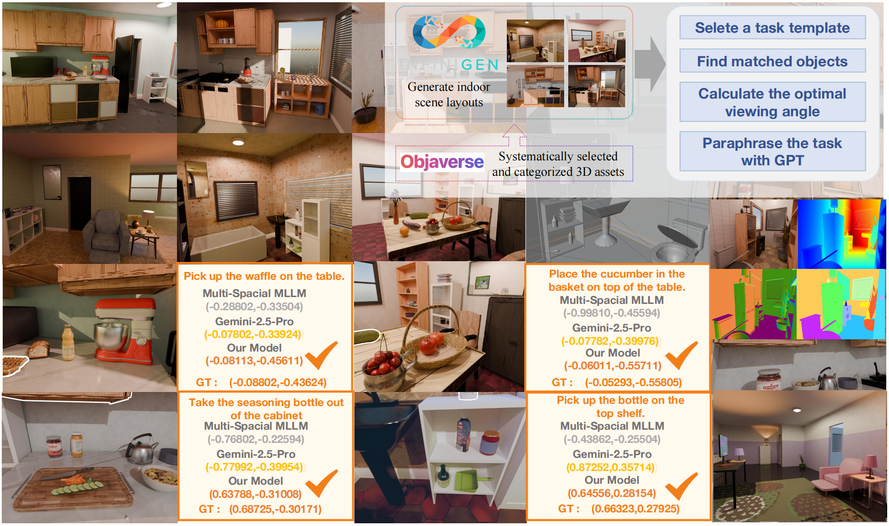
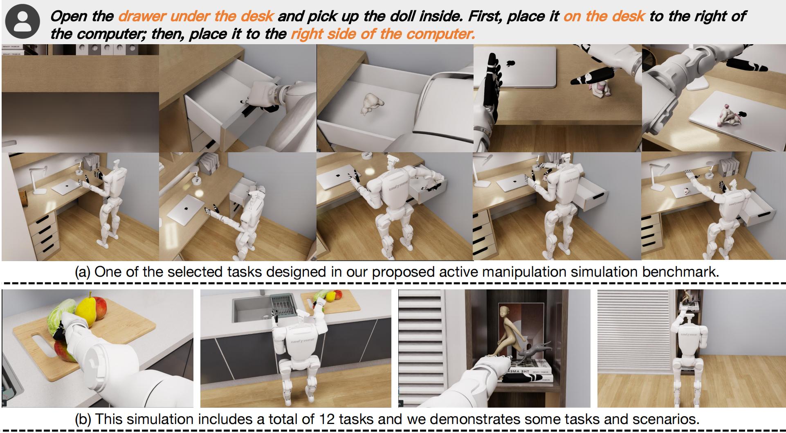

Active perception and manipulation are crucial for robots to interact with complex scenes. Existing methods struggle to unify semantic-driven active perception with robust, viewpoint-invariant execution. To this end, we propose SaPaVe, an end-to-end framework that jointly learns these capabilities in a data-efficient manner. Central to our approach is a decoupling of camera and manipulation actions, together with a bottom-up training strategy: we first train semantic camera control on a large-scale dataset, and then jointly optimize camera movement and manipulation through hybrid data.
To support this, we introduce ActiveViewPose-200K, a dataset comprising 200k image-language-camera movement pairs for semantic camera movement learning, and a 3D geometry-aware module that improves execution robustness under dynamic viewpoints. We further present ActiveManip-Bench, the first benchmark designed to evaluate active manipulation. Extensive experiments in both simulation and real-world settings show that SaPaVe significantly outperforms recent VLA models, demonstrating the importance of tightly coupled perception and execution learned through decoupled yet coordinated strategies.
Semantic Active Perception
Average success rate on ActiveViewPose-200K
Simulation Success Rate
Average success rate on ActiveManip-Bench
Real-World Success Rate
Average success rate across active manipulation tasks

SaPaVe is built around two main ideas: (1) decoupled action heads and camera adapter, and (2) universal spatial knowledge injection.
The model processes RGB observations, optional geometric inputs, and language instructions, and predicts two kinds of outputs in a decoupled action space: camera actions for active viewpoint adjustment and manipulation actions for arm-hand control. This decoupling helps reduce cross-interference between action types and improves learning efficiency.
The training follows a two-stage bottom-up strategy. In Stage 1, the model learns semantic active perception using ActiveViewPose-200K, which equips it with strong priors for deciding where to look. In Stage 2, the model is further optimized for active manipulation using mixed data, combining active camera control with robust task execution.

ActiveViewPose-200K is a large-scale, high-quality semantic active perception dataset containing 200,000 image-language-camera movement pairs. It is designed to teach robots how to actively adjust their viewpoint according to task-relevant semantics.
The dataset is built through a semi-automatic pipeline including:
The dataset covers various active perception scenarios including visual centering, spatial directives, commonsense search, conditional reasoning, and container interaction.

ActiveManip-Bench is the first benchmark specifically designed to evaluate active manipulation beyond traditional fixed-view settings. It is built on NVIDIA Isaac Sim and features a humanoid robot with an active head camera.
The benchmark currently includes:
Tasks range from atomic operations such as pick, reorient, and open/close, to long-horizon tasks such as fetch-from-drawer, fetch-from-cabinet, and liquid pouring.
Real-world Articulated Manipulation
Real-world Pick-and-Place
Real-world Pick-and-Place
Real-world Articulated Manipulation
Real-world Articulated generalization
Real-world Pick-and-Place generalization
We deploy SaPaVe on a real Unitree G1 humanoid robot equipped with Inspire 3 dexterous hands and a custom active head with RealSense D455 RGB-D camera.
The real-world evaluation includes:
We additionally test generalization under unseen objects, unseen scenes, and lighting changes, where SaPaVe demonstrates robust performance.
SaPaVe presents a new direction for robotic active manipulation by tightly coupling semantic active perception with active-view execution. Through a decoupled action formulation, a two-stage bottom-up learning strategy, and flexible 3D spatial knowledge integration, the framework achieves strong performance across simulation and real-world settings.
@article{liu2026sapave,
title={SaPaVe: Towards Active Perception and Manipulation in Vision-Language-Action Models for Robotics},
author={Liu, Mengzhen and Zhou, Enshen and Chi, Cheng and Han, Yi and Rong, Shanyu and Chen, Liming and Wang, Pengwei and Wang, Zhongyuan and Zhang, Shanghang},
journal={arXiv preprint arXiv:2603.12193},
year={2026},
url={https://arxiv.org/abs/2603.12193}
}